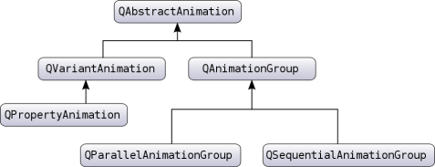

The Animation Framework
The animation framework provides an easy way to animate your GUI elements. It enables you to animate a Qt property value of a widget or QObject. Most of the features offered by the framework are also available in Qt Quick, where it's possible to define animations in a declarative way.
This overview explains the framework's architecture, with examples that demonstrate the common techniques used for animating QObject and GUI elements.
The Animation architecture
The following diagram shows the most important classes provided by the framework:

It includes the QAbstractAnimation class, which provides the necessary foundation for animations. This class defines the generic properties for all animations supported by the framework. For example, the ability to start, stop, and pause an animation. The class also receives the time change notifications.
The framework further provides the QVariantAnimation and QAnimationGroup classes, which build on their base case, QAbstractAnimation. Next in the hierarchy is QPropertyAnimation, which is derived from QVariantAnmiation, and it lets you animate a Qt property of a widget or QObject. The class performs interpolation on the property value using an easing curve. With these in place, you just need a QObject class with a Qt property value that you can animate.
Note: It is required that the target object you are animating is a QObject or its subclass. This is necessary as the animation framework depends on the meta-object system for all the information about the object it is animating.
Complex animations can be constructed by building a tree structure of QAbstractAnimations, where the tree is a QAnimationGroup that contains other animations. These animation groups can also contain subgroups representing different groups or animations, such as QParallelAnimationGroup and QSequentialAnimationGroup.
Behind the scenes, all animations are controlled by a global timer, which sends updates about all animations that are running.
For detailed information of these individual classes' and their roles in the framework, refer to their documentation.
Classes offered by the framework
These classes provide the necessary infrastructure to create both simple and complex animations.
The base of all animations | |
Abstract base class for groups of animations | |
Easing curves for controlling animation | |
Parallel group of animations | |
Pause for QSequentialAnimationGroup | |
Animates Qt properties | |
Sequential group of animations | |
Timeline for controlling animations | |
Base class for animations |
Animating Qt properties
As the QPropertyAnimation class can interpolate on Qt properties, it is used often. In fact, its superclass—QVariantAnimation—provides an abstract implementation of updateCurrentValue(), which does not change any value unless you change it on the valueChanged signal.
The framework lets you animate the Qt properties of the existing classes in Qt. For example, the QWidget class—can be embedded in a QGraphicsView—has properties for its bounds, colors, and so on. The following example demonstrates how you can animate a QPushButton widget:
#include <QApplication> #include <QPushButton> #include <QPropertyAnimation> class MyButtonWidget : public QWidget { public: MyButtonWidget(QWidget *parent = nullptr); }; MyButtonWidget::MyButtonWidget(QWidget *parent) : QWidget(parent) { QPushButton *button = new QPushButton(tr("Animated Button"), this); QPropertyAnimation *anim = new QPropertyAnimation(button, "pos", this); anim->setDuration(10000); anim->setStartValue(QPoint(0, 0)); anim->setEndValue(QPoint(100, 250)); anim->start(); } int main(int argc, char *argv[]) { QApplication a(argc, argv); MyButtonWidget buttonAnimWidget; buttonAnimWidget.resize(QSize(800, 600)); buttonAnimWidget.show(); return a.exec(); }
The example animates the pos Qt property of a QPushButton, to move it from the top–left corner of the screen to the end position (250, 250), in 10 seconds (10000 milliseconds).
It uses the linear interpolation method to control the speed of animation between the start and end values. Try adding another value in–between the start and end value to see how they are interpolated. This time use the QPropertyAnimation::setKeyValueAt function to add these values:
... anim->setDuration(10000); anim->setKeyValueAt(0, QPoint(0, 0)); anim->setKeyValueAt(0.8, QPoint(250, 250)); anim->setKeyValueAt(1, QPoint(0, 0)); ...
In this example, the animation moves the button to (250, 250) in 8 seconds, and moves it back to its original position in the remaining 2 seconds. The button's movement is linear-interpolated between these points.
You can also animate a QObject's value that is not declared as a Qt property, if the value has a setter method. In such cases, derive a new class from the class that contains the value, and add a Qt property for that value with the setter.
Note: Each Qt property requires a getter also, so you should provide a getter if that is not defined.
class MyGraphicsRectItem : public QObject, public QGraphicsRectItem { Q_OBJECT Q_PROPERTY(QPointF pos READ pos WRITE setPos) };
In this example, the MyGraphicsRectItem derives from QGraphicsRectItem and QObject, and defines the pos property. You can animate the item's pos even if QGraphicsRectItem does not provide the pos property.
For a general introduction to the Qt property system, refer to Qt's Property System.
Animations and the Graphics View Framework
QPropertyAnimation can also be used to animate a QGraphicsItem, which does not inherit QObject. In such cases, you derive a class from the graphics item that you want to animate. This derived class should also inherit form QObject to enable using QPropertyAnimation on a QGraphicsItem. The following example shows how this is done:
class Pixmap : public QObject, public QGraphicsPixmapItem { Q_OBJECT Q_PROPERTY(QPointF pos READ pos WRITE setPos) ... }
Note: You can also derive from QGraphicsWidget, which already is a QObject.
As described in the previous section, you need to define properties that you want to animate. The derived class must inherit from QObject first as the meta-object system requires it.
Easing curves
A QPropertyAnimation performs linear interpolation between the start and end property values. In addition to adding more key values to the animation, you can also choose an easing curve to control the speed of interpolation between 0 and 1, without changing the path.
MyButtonWidget::MyButtonWidget(QWidget *parent) : QWidget(parent) { QPushButton *button = new QPushButton(tr("Animated Button"), this); QPropertyAnimation *anim = new QPropertyAnimation(button, "pos", this); anim->setDuration(10000); anim->setStartValue(QPoint(0, 0)); anim->setEndValue(QPoint(100, 250)); anim->setEasingCurve(QEasingCurve::OutBounce); anim->start(); }
In this example, the animation follows a curve that makes the button bounce like a ball. QEasingCurve offers a large collection of curves to choose from the QEasingCurve::Type enum. If you want to use another curve that is not available, implement one yourself and register it with QEasingCurve.
Grouping animations
An application often contains more than one animation. For example, it wants to move more than one graphics item simultaneously or move them in sequence after each other.
The subclasses of QAnimationGroup—QSequentialAnimationGroup and QParallelAnimationGroup—are containers for other animations so that these animations can be animated either in sequence or parallel. The QAnimationGroup does not animate properties, but it gets notified of time changes periodically. This enables it to forward those time changes to the animation groups, which control when their animations are played.
The two following examples demonstrate the use of both QSequentialAnimationGroup and QParallelAnimationGroup:
MyButtonWidget::MyButtonWidget(QWidget *parent) : QWidget(parent) { QPushButton *bonnie = new QPushButton(tr("Bonnie"), this); QPushButton *clyde = new QPushButton(tr("Clyde"), this); QPropertyAnimation *anim1 = new QPropertyAnimation(bonnie, "pos", this); anim1->setDuration(3000); anim1->setStartValue(QPoint(0, 0)); anim1->setEndValue(QPoint(100, 250)); QPropertyAnimation *anim2 = new QPropertyAnimation(clyde, "pos", this); anim2->setDuration(3000); anim2->setStartValue(QPoint(100, 250)); anim2->setEndValue(QPoint(500, 500)); QParallelAnimationGroup *parallelAnim = new QParallelAnimationGroup; parallelAnim->addAnimation(anim1); parallelAnim->addAnimation(anim2); parallelAnim->start(); }
A parallel group plays more than one animation at the same time. Its start() function starts all animations that are part of the group.
MyButtonWidget::MyButtonWidget(QWidget *parent) : QWidget(parent) { QPushButton *bonnie = new QPushButton(tr("Bonnie"), this); QPushButton *clyde = new QPushButton(tr("Clyde"), this); QPropertyAnimation *anim1 = new QPropertyAnimation(bonnie, "pos", this); anim1->setDuration(3000); anim1->setStartValue(QPoint(0, 0)); anim1->setEndValue(QPoint(100, 250)); QPropertyAnimation *anim2 = new QPropertyAnimation(clyde, "pos", this); anim2->setDuration(3000); anim2->setStartValue(QPoint(0, 0)); anim2->setEndValue(QPoint(200, 250)); QSequentialAnimationGroup *sequenceAnim = new QSequentialAnimationGroup; sequenceAnim->addAnimation(anim1); sequenceAnim->addAnimation(anim2); sequenceAnim->start(); }
As the name suggests, a QSequentialAnimationGroup plays its animations in sequence. It starts the next animation in the list after the previous finishes.
A group is an animation itself, so you can add it to another group. This way, building an animation tree, which define when the animations are played in relation to each other.
Object ownership
A QPropertyAnimation should always have a parent that controls its lifespan. A typical application may include several animations that are grouped, where the animation group takes ownership of those animations. An independent QPropertyAnimation must be explicitly assigned a parent to control its lifespan. In the following example, you can see that an independent QPropertyAnimation has the QApplication instance as its parent:
#include <QApplication> #include <QPushButton> #include <QPropertyAnimation> class MyButtonWidget : public QWidget { public: MyButtonWidget(QWidget *parent = nullptr); }; MyButtonWidget::MyButtonWidget(QWidget *parent) : QWidget(parent) { QPushButton *button = new QPushButton(tr("Animated Button"), this); QPropertyAnimation *anim = new QPropertyAnimation(button, "pos", this); anim->setDuration(10000); anim->setStartValue(QPoint(0, 0)); anim->setEndValue(QPoint(100, 250)); anim->start(); } int main(int argc, char *argv[]) { QApplication a(argc, argv); MyButtonWidget buttonAnimWidget; buttonAnimWidget.resize(QSize(800, 600)); buttonAnimWidget.show(); return a.exec(); }
Note: You can also control the animation's lifespan by choosing a delete policy while starting it.